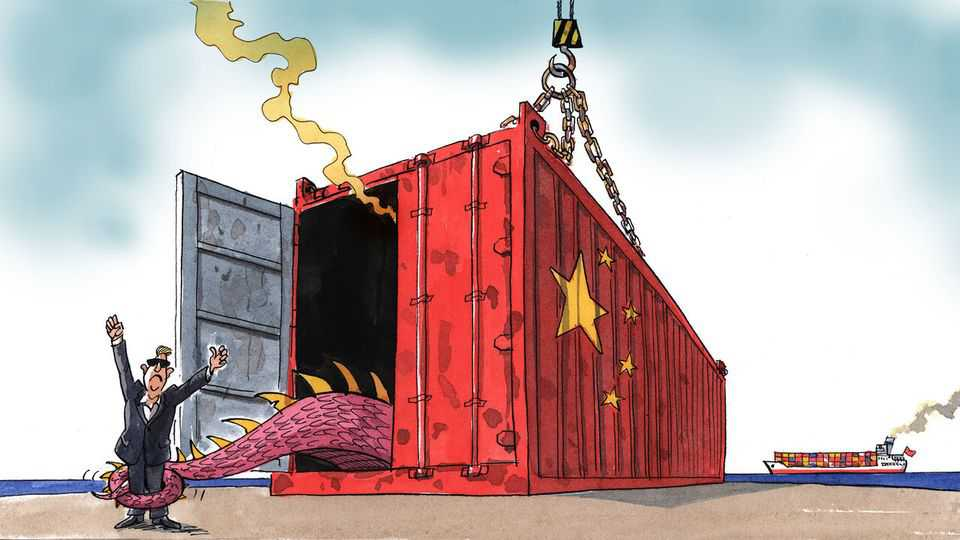

Why Europe’s populists forget to bash China
An ideal target gets a free pass from the demagogues

Sep 17th 2026
Imagine trying to craft the perfect bogeyman to haunt the European imagination. This dreamt-up foe would be a very large country, perhaps adhering to the same communist ideology that for decades shackled Eastern Europe. Such an imaginary nemesis would have harnessed the heft of its state-planned economy to export the exact same products that once enriched Europe, such as cars—yet make them better and cheaper. To be a convincing geopolitical menace this antagonist would have supported Russia as it assailed Ukraine, and could thus be held indirectly responsible for the security crisis that afflicts the continent. To top it all off, it might be blamed for having spawned, in still-unclear circumstances, a virus that just a few years ago kept Europeans indoors for months on end.
For a populist politician, the rhetoric with which to blast such a foe, and the useless globalist politicians letting ’em get away with it, ought to write itself. And yet. Populists adept at finding a foreign (or migrant) culprit behind almost every grievance have somehow developed a blind spot the size of China. Whether on the left or the right, Europe’s firebrands are oddly unwilling to cast Beijing as the villain of the piece. The Alternative for Germany (AfD) thinks China is so fantastic it wants Germany to take part in its “Belt and Road” infrastructure initiative. In Hungary the Fidesz party of Viktor Orban, which got its start bashing commies of the Soviet ilk, became cheerleaders for their Chinese comrades. On the left, Unsubmissive France has warned against European “meddling”, should China one day invade Taiwan.
Such complaisance is all the more surprising given that vilifying Beijing once did political wonders for another demagogue. During his first term as president, Donald Trump droned on about China “ripping off” America, before berating it for the “Kung flu” covid virus. The same economic forces that Mr Trump played on—large trade imbalances caused by cheap Chinese exports, and the resulting losses of American jobs—are now slamming into Europe. Vast subsidies to China’s industrial champions have caused a gaping goods-trade deficit of €1bn ($1.15bn) a day in favour of China, and been blamed for factory closures in Europe’s industrial heartlands, particularly Germany. Once a customer for European wares, soaking up its cars and chemicals, China has become a purveyor of them, including to Europe itself. It has even threatened to cut off the supply of critical minerals or microchips vital to keep European factories ticking.
As a result, both unions and employers in Europe are fretting about a new China Shock. Most voters across the continent have an unfavourable view of the country. This ought to be pure demagogic gold. Granted, for a populist in search of synthetic outrage, a factory worker in Shenzhen “stealing our jobs” is less tangible than a local migrant supposedly filching our social security. And a handful of nationalist parties have indeed taken the odd potshot at China. Giorgia Meloni, Italy’s prime minister, pulled out of the Belt and Road initiative. A Dutch far-right MP once warned of a “Trojan dragon” bearing down on Europe. Across the Nordics, hard-right types accuse it of espionage, economic coercion and other forms of skulduggery. But there is lots more here for ambitious rabble-rousers to latch onto. The grievance merchants have unaccountably ignored a rich seam of potential angst.
What lies behind this China populism gap? In Germany it may be a matter of personnel. The AfD’s leader, Alice Weidel, is a longtime Sinophile, said to speak decent Mandarin after years working there and writing her PhD thesis on the country’s pension system. (Why she is so indulgent towards Russia is another question.) And in countries where populists rule, vast investments from Chinese firms have paid rich dividends to their members. Within weeks of being booted out of office, Mr Orban’s long-standing foreign minister resurfaced as a lobbyist for BYD, a Chinese carmaker.
Moreover, for many populists, China is less a bête noire than a model. Authoritarianism à la Beijing has a certain allure to wannabe strongmen in Europe. The overt form of nationalism practised there contrasts with the mushy globalism that typifies the European Union. In the demagogic imagination, Europe is hobbling itself by following international norms—whether on green issues, trade or human rights—that China barely pays lip service to. This worldview pictures Europeans as the patsies of an international order that China, and perhaps America these days, have worked out how to exploit. If you can’t beat China, the pedlars of outrage might think, at least try to imitate it.
But the main problem for Europe’s wannabe China-antagonists is that picking a fight with Beijing would require the very thing populists profess to hate most: more Europe. For only by acting collectively through Brussels do Europeans have any hope of swaying policy in Beijing. The EU has already imposed tariffs on Chinese electric vehicles, though imports keep rising. On September 16th Ursula von der Leyen, president of the European Commission, described the deficit with China as having reached “a tipping point” and hinted at further trade measures, should it persist.
Trade-wary populists ought to be cheering. For now they are silent, careful not to suggest the EU is doing anything right. Soon they may have little choice but to show their hand, posits Janka Oertel of the European Council on Foreign Relations, a think-tank. Once China was a foreign-policy issue, one that voters were not paying much attention to. If a trade war pitting China against Europe ensues, as seems ever more probable, it will become much harder for demagogues to sit on the fence, let alone cheer for the opposition. Soon Europe’s populists will have to decide whether China is a model to borrow from, or a threat to rail against.■